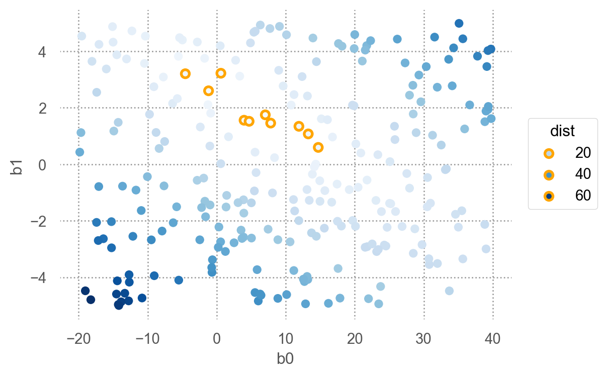
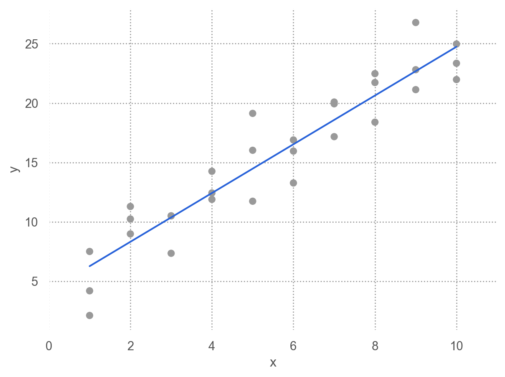
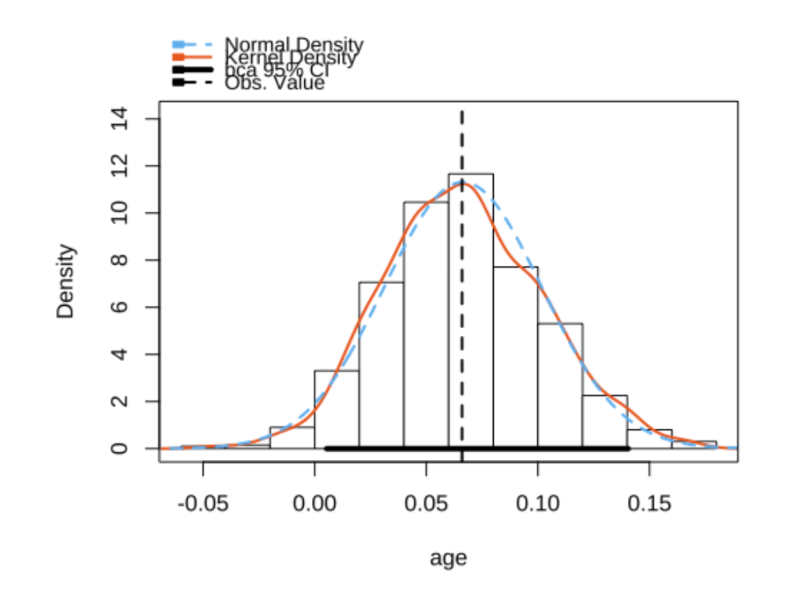

# numerical calculation & data framesimport numpy as npimport pandas as pd# visualizationimport matplotlib.pyplot as pltimport seaborn as snsimport seaborn.objects as so# statisticsimport statsmodels.api as sm# pandas optionspd.set_option('mode.copy_on_write', True) # pandas 2.0pd.options.display.float_format ='{:.2f}'.format# pd.reset_option('display.float_format')pd.options.display.max_rows =7# max number of rows to display# NumPy optionsnp.set_printoptions(precision =2, suppress=True) # suppress scientific notation# For high resolution displayimport matplotlib_inlinematplotlib_inline.backend_inline.set_matplotlib_formats("retina")
Introduction
Source: R for Data Science by Wickham & Grolemund
모델의 목표는 데이터 세트에 대한 간단한 저차원 요약을 제공하는 것입니다. 이상적으로, 모델은 진정한 ‘신호’(즉, 관심 있는 현상에 의해 생성된 패턴)를 포착하고 ‘노이즈’(즉, 관심 없는 임의의 변동)는 무시합니다.
The goal of a model is to provide a simple low-dimensional summary of a dataset. Ideally, the model will capture true “signals” (i.e. patterns generated by the phenomenon of interest), and ignore “noise” (i.e. random variation that you’re not interested in).
이상적으로, 모형(model)이 현상으로부터 노이즈가 제거된 진정한 신호를 잡아내 주기를 기대. 물리 법칙: 물리적 세계에 대한 모델
Conditional distributions on X (interval)
예를 들어, 캐럿과 가격의 진정한 관계를 모델로 표현
Linear model: \(Y = aX + b + \epsilon\), \(\epsilon\): errors
\(price = a \cdot carat + b + \epsilon\)
로그 변환 후 선형관계로 가정: \(log(price) = a \cdot log(carat) + b + \epsilon\)
\(\epsilon\): Gaussian 분포로 가정, 즉 \(\epsilon \sim N(0, \sigma^2)\)
250개의 모델 중 10개의 모델을 다음과 같은 \((\beta_0, \beta_1)\) 평면으로 살펴보면, 즉, model space에서 살펴보면
오렌지 색은 위에서 구한 10 best models

Source: Introduction to Statistical Learning by James et al.
점차 촘촘한 간격으로 grid search를 하면서 거리를 (근사적으로) 최소로 하는 모델을 찾을 수 있음; 실제로는 Newton-Raphson search를 통해 최소값을 구하는 알고리즘을 이용
즉, 거리를 최소로 하는 \(\beta_0\), \(\beta_1\)를 찾으면,
from scipy.optimize import minimizeminimize(measure_distance, [0, 0], args=(sim1)).x
array([4.22, 2.05])

이렇게 squared error가 최소가 되도록 추정하는 것을 ordinary least squares(OLS) estimattion라고 함.
선형 회귀 모형의 경우, 실제로는 위에서 처럼 grid search를 하지 않고, closed-form solution을 통해 바로 구할 수 있음.
Maximum likelihood estimation
데이터가 발생된 것으로 가정하는 분포를 고려했을 때,
파라미터가 어떤 값일 때(즉, 어떤 모델일 때) 주어진 데이터가 관측될 확률/가능도(likelihood)가 최대가 되겠는가로 접근하는 방식으로,
X, Y의 관계와 확률분포를 함께 고려함.
이 때, 이 likelihood를 최대화하는 \(\beta_0, \beta_1, \sigma\)를 찾는 것이 목표이며,
이처럼 분포가 Gaussian라면, OLS estimation과 동일한 값을 얻음. (단, \(\sigma\)는 bias가 존재)
다른 분포를 가지더라도 동일하게 적용할 수 있음!
즉, likelihood의 관점에서 주어진 데이터에 가장 근접하도록(likelihood가 최대가 되는) “분포의 구조”를 얻는 과정임
from scipy.optimize import minimizeminimize(likelihood, [0, 0], args=(sim1)).x
array([4.22, 2.05])
from statsmodels.formula.api import olsmod = ols('y ~ x', data=sim1).fit()mod.summary()
OLS Regression Results
Dep. Variable:
y
R-squared:
0.885
Model:
OLS
Adj. R-squared:
0.880
Method:
Least Squares
F-statistic:
214.7
Date:
Sat, 12 Apr 2025
Prob (F-statistic):
1.17e-14
Time:
18:33:25
Log-Likelihood:
-65.226
No. Observations:
30
AIC:
134.5
Df Residuals:
28
BIC:
137.3
Df Model:
1
Covariance Type:
nonrobust
coef
std err
t
P>|t|
[0.025
0.975]
Intercept
4.2208
0.869
4.858
0.000
2.441
6.001
x
2.0515
0.140
14.651
0.000
1.765
2.338
Omnibus:
0.125
Durbin-Watson:
2.254
Prob(Omnibus):
0.939
Jarque-Bera (JB):
0.333
Skew:
0.081
Prob(JB):
0.847
Kurtosis:
2.510
Cond. No.
13.7
Notes: [1] Standard Errors assume that the covariance matrix of the errors is correctly specified.
Maximum likelihood estimation은 다양한 분포의 데이터에 대해서도 적용할 수 있음.
예를 들어, 다음과 같은 전형적인 Gaussian이 아닌 분포에 대해서도 적용할 수 있음.
Non-constant variance(왼쪽), Poisson distribution(오른쪽)
Uncertainty
관찰된 데이터(표본, sample)로부터 모집단(population)에 대한 정보를 추론할 때, 불확실성이 존재함.
이는 새로운 데이터에 대한 예측의 불확실성 혹은 일반화(generalization)에 대한 문제와 동일함.
예를 들어, 과거 병원 기록으로 새로운 환자에 대한 진단을 내리는 경우
이 환자의 고유한 상태로부터 오는 불확실성: 측정된 부분(measured) + 측정되지 않은 부분(unmeasured)
과거 기록을 통한 진단의 정확성(true relationship)에 대한 불확실성
불확실성에 대한 종류
파라미터 추정치에 대한 불확실성: confidence interval
데이터가 많을수록
X와 Y의 관계가 강할수록
X가 넓게 분포할수록
특정 추정값에 대한 불확실성
평균값(\(E(Y|X_i)\))에 대한 불확실성: confidence interval
예측값(\(f(X_i)\))에 대한 불확실성: prediciton interval
가령, 성별에 따른 키의 차이를 모델링한다면 \(height = \beta_0 + \beta_1\cdot sex\)
모집단에 대한 가정:
Sample size: 20
Sample size: 200
전통적으로는 분포에 대한 가정으로부터 이론적으로 불확실성을 추론했으나,
현대적인 접근으로 resampling 방식의 bootstrapping이나 sample을 traing/test set으로 나누는 cross-validation 등을 통해 시뮬레이션을 통해 불확실성을 추정할 수 있음
Bayesian 방식에서는 모집단의 분포에 대한 가정없이, 관찰된 데이터만으로 파라미터에 대한 분포(posterior predictive distribution)로 불확실성에 대해 추정하는 방식도 있음; 앞서 지구의 바다/육지의 비율에 대한 분포의 예측 참고
반대로, machine learning에서는 특정 action 혹은 decision-making을 하는 것이 중요한 경우가 많아, 불확실성에 대한 고려가 적은 경향이 있음; 가령, 불확실성이 크던 작던 간에, 실용적인 관점에서 구체적으로 가격을 예측하거나, 질병 여부를 예측하길 기대함. 어떤 질병에 걸렸을 확률이 0.8로 예측되는 경우라도 사실은 불확실성을 고려하면 그 확률은 가령 0.7 ~ 0.9 사이일 수 있음.
아래는 bootstrapping을 통한 실제 표본을 재추출(resampling)하는 방식을 보여줌; 관찰된 표본을 모집단인듯 가정하고 표본을 재추출
전통적으로는 표본 분포(sampling distribution)에 대한 이론을 통해 closed form으로 얻을 수 있음.
Source: The Truthful Art by Albert Cairo.

Predictive Accuracy
전통적인 모형에서는
샘플에 대해서 계산된 예측정확도 값은 모집단에서보다 overestimate 되는 경향이 있으므로,
모집단에서의 예측정확도를 이론적으로 보정하는 방식으로 계산: adjusted, shrunken
현대적인 방식에서는
샘플을 training/test set으로 나누어서, test set에 대한 예측값을 계산하고, 이를 통해 (미래 데이터에 대한) 예측 정확성을 평가함
비슷하게, resampling(샘플에서 직접 다시 추출) 방식의 bootstrapping을 통해 해결